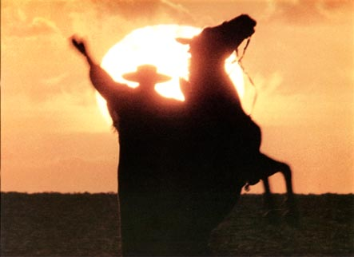

|  | HISTÓRICOA Tertúlia começou como uma pequena reunião de amigos com objetivo de cultivar o tradicionalismo, visto que no Oeste Catarinense, foi colonizada praticamente por gaúchos que até hoje cultivam a tradição do chimarrão, churrasco, rodeios, declamações, música, poesia. Pensando em manter viva essa chama crioula, essa pequena reunião foi tornando-se cada vez maior, e através de patrocínio das mesmas pessoas que assistem os shows, o evento foi tomando corpo. Atualmente o evento acontece anualmente, em dois dias, e é complementado por shows nacionais. Artistas como César Oliveira e Rogério Mello, Xirú Missioneiro, Oswaldir e Carlos MagrãO, João Chagas Leite e Banda Chama de Galpão já se apresentaram no evento. Na quinta feira após a janta, os próprios participantes do evento se aprentam, com declamações, tocam músicas com gaita e violão. |